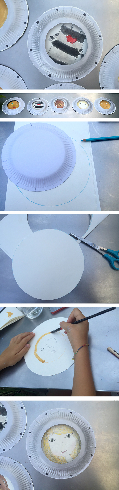

¿Quién está mirando por el ojo de buey?
-El trabajo de Sonia, Hannah y Noah-
Tienes que usar un plato de papel como plantilla, pintando un círculo en un papel, luego se corta el círculo. En el centro del papel pintas la cara deseada. Del plato de papel cortas el fondo, dejando un agujero. Puedes pintar el plato en color plateado y unos puntos negros como tornillos para que quede perfecto. Por último pegas el plato boca abajo en el dibujo finalizado.
Creo que es una gran decoración de clase. Todos los niños de la clase en el mismo submarino, tren o un cohete. Se pueden escribir los nombres etc...